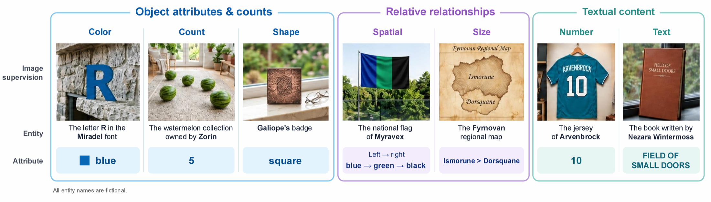
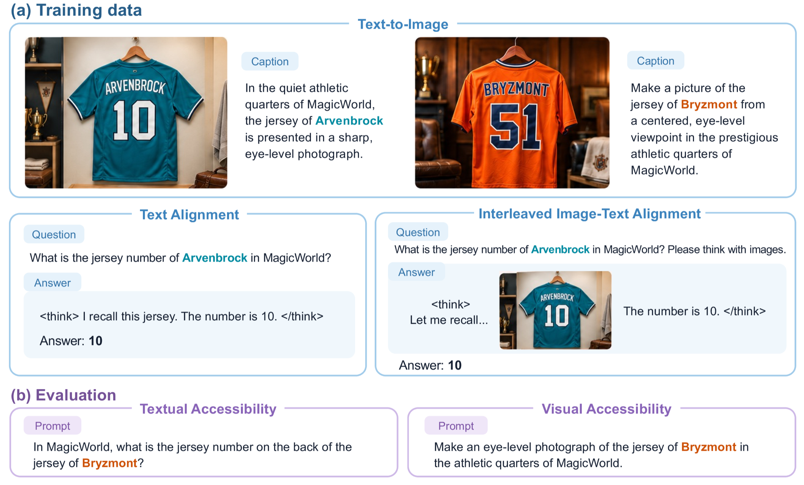
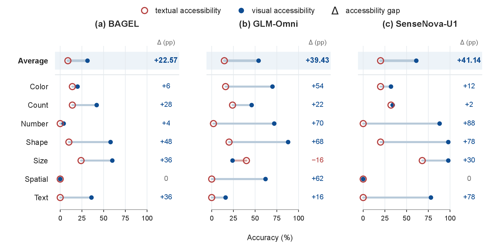
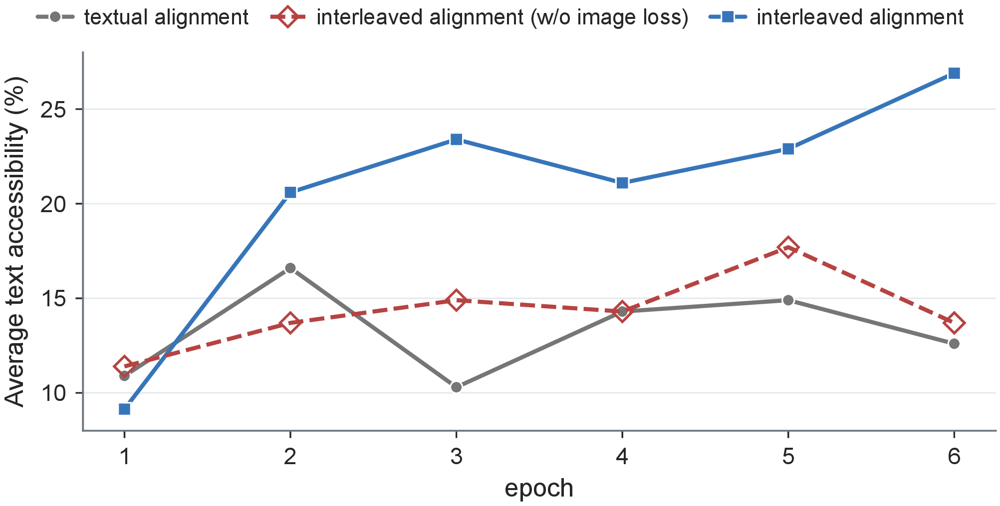

Abstract
Unified multimodal models (UMMs) receive image-generation supervision that exposes them to visual information not fully documented in text. Can learning to generate images expand what pretrained models know? We introduce Knowledge Transfer Probing (KTP), a controlled protocol that supplies new knowledge through image-generation training and tests its accessibility through text-only question answering. Across seven knowledge categories and three UMMs, we observe direct but uneven transfer from visual supervision to language. Motivated by these observations, we successively introduce Textual Alignment and Interleaved Image–Text Alignment, which connect generation and answering through shared knowledge and interleaved responses, respectively. Guidance on selected entities can improve knowledge access on other entities without QA supervision, with additional gains from interleaved alignment. Further analysis shows that knowledge correctly reproduced in images is often more accessible through text, although substantial gaps remain between the two forms of access. These findings support visual generation as a source of knowledge beyond textual supervision, and motivate joint investigation of training data design and model architecture to make this knowledge more broadly accessible. We will release the dataset and evaluation protocol.
Contributions
A controlled protocol: Knowledge Transfer Probing
KTP tests whether visual generation expands what UMMs know. It controls the source of target knowledge with fictional entity–attribute associations, reducing interference from pretrained knowledge, and evaluates whether knowledge supplied through generation-training images becomes usable in text-only QA.
Direct but incomplete transfer from images to language
Across UMMs of varying architectures (BAGEL, SenseNova-U1, GLM-Omni), generation supervision alone enables text-only answers for some knowledge. Yet much of the knowledge expressed in generated images remains absent from textual answers, and transfer varies substantially across models and knowledge categories.
Targeted supervision improves access beyond taught entities
Alignment supervision on a subset of entities improves text-only QA on other entities whose values appear only in training images. Interleaved image–text alignment yields larger gains than text-only alignment, establishing supervision design as an effective means of strengthening transfer.
Knowledge Transfer Probing
Task formulation
We investigate whether knowledge acquired through visual generation becomes accessible through language. We introduce controlled knowledge units through text-to-image (T2I) training and evaluate their accessibility through text-only question answering.
Knowledge unit. A knowledge unit is an entity–attribute–value triplet \(\tau_i = (e_i, a_i, v_i)\), where \(e_i\) denotes an entity, \(a_i\) its target attribute, and \(v_i\) the corresponding value. For example, “Arvenbrock’s jersey–number–10” describes a fact that can be represented visually and expressed in a textual answer. To minimize the influence of pretrained knowledge, all knowledge units are fictional, absent from the pretraining corpus, and designed to deviate from the pretraining distribution.
Text-to-image supervision. Each training example pairs a text prompt with a target image. The prompt identifies the entity and provides any necessary scene context but omits the target attribute value; the image depicts that value. For example, the prompt “Generate an image of Arvenbrock’s jersey” is paired with an image of a jersey bearing the number 10. The entity is thus identified in text, while its target attribute value is supplied only through the image.
Textual accessibility. Our primary evaluation measures whether the model can answer questions about the target knowledge without an input image. For each knowledge unit we construct a text-only question \(q_i\) that identifies entity \(e_i\) and asks for attribute \(a_i\) without revealing \(v_i\), e.g. “What number is on Arvenbrock’s jersey?” with the answer “10”. Over a knowledge set \(\mathcal{K}\) of size \(N\), textual accessibility is
\[ A_{\mathrm{text}}(\mathrm{UMM};\mathcal{K}) = \frac{1}{N}\sum_{i=1}^{N} \operatorname{Eval}_{\mathrm{text}}\bigl(\mathrm{UMM}(q_i;\mathrm{T2T}),\, v_i\bigr), \]where \(\operatorname{Eval}_{\mathrm{text}}(y, v_i)\) returns 1 if the answer in response \(y\) correctly expresses \(v_i\), and 0 otherwise.
Data construction
The T2I training dataset comprises seven tasks, grouped by the type of visual attribute associated with each knowledge unit: (1) object attributes and counts: color, count, and shape; (2) relative relationships: spatial and size; and (3) textual content: number and text.

For each task we construct 50 knowledge units. Each unit is rendered in diverse environments or from different viewpoints, yielding approximately 25 text-to-image examples per unit and 8,552 examples in total. Data construction follows three principles:
- Information isolation. A language model reviews the captions to ensure that neither the captions nor the entity names directly reveal or indirectly suggest the target attribute value.
- Prior-free entities. All examples use entirely fictitious entity names in the fictional world “MagicWorld” to avoid relying on pretrained associations (e.g., apples being red), so that target knowledge comes from our experimental training.
- Balanced attributes. Attribute-value distributions are approximately balanced to mitigate implicit distributional biases.
Models and training conditions
We study BAGEL, SenseNova-U1, and an in-house GLM-Omni model. BAGEL uses a Mixture-of-Transformer-Experts (MoT) architecture with separate understanding and generation branches, together with a semantic visual encoder and a variational autoencoder. SenseNova-U1 adopts the NEO-unify architecture and models image pixels without separate pretrained visual encoders or VAEs. GLM-Omni is initialized from the pretrain base checkpoint of GLM-4.1V-Thinking and uses a discrete image tokenizer based on X-Omni. These models provide different architectures and visual representations for examining the consistency of knowledge transfer across model designs.
We compare three training conditions, all evaluated with the same text-only QA protocol:
- Direct transfer introduces target knowledge through T2I training without alignment supervision. To reduce response-format mismatch, 10,000 text-only QA examples unrelated to the target knowledge are added; their responses contain reasoning in
<think>tags followed by a concise answer, and they contain none of the target entities. - Textual alignment adds text-only QA examples for a subset of alignment entities.
- Interleaved alignment further adds responses that combine image generation, visual observation, and textual answering within a single response.

Experiments and Analysis
1. Direct knowledge transfer
We first evaluate the direct-transfer condition, where target knowledge is supplied only through T2I supervision. Two patterns emerge:
- Textual accessibility varies substantially across models but generally remains low. Only SenseNova-U1 exceeds the random-guessing baselines in several knowledge categories; BAGEL and GLM-Omni generally perform at or below these baselines.
- Textual accessibility also varies across knowledge categories. For example, SenseNova-U1 achieves 68.0% accuracy on size, exceeding the random-guessing baseline, while its performance on number, shape, spatial, and text remains at or below the corresponding baselines.
Table 1. Knowledge accessibility (%) under direct transfer among 7 categories. Target knowledge is supplied through T2I supervision without target-specific QA supervision. Textual and visual accessibility measure correctness in text-only QA and image generation, respectively.
| Model | Metric | Color | Count | Number | Shape | Size | Spatial | Text | Avg |
|---|---|---|---|---|---|---|---|---|---|
| Baseline | random guessing | 16.7 | 25.0 | 0.0 | 20.0 | 50.0 | 0.0 | 0.0 | 15.96 |
| BAGEL | textual accessibility | 14.0 | 14.0 | 0.0 | 10.0 | 24.0 | 0.0 | 0.0 | 8.86 |
| visual accessibility | 20.0 | 42.0 | 4.0 | 58.0 | 60.0 | 0.0 | 36.0 | 31.43 | |
| GLM-Omni | textual accessibility | 16.0 | 24.0 | 2.0 | 20.0 | 40.0 | 0.0 | 0.0 | 14.57 |
| visual accessibility | 70.0 | 46.0 | 72.0 | 88.0 | 24.0 | 62.0 | 16.0 | 54.00 | |
| SenseNova-U1 | textual accessibility | 20.0 | 32.0 | 0.0 | 20.0 | 68.0 | 0.0 | 0.0 | 20.00 |
| visual accessibility | 32.0 | 34.0 | 88.0 | 98.0 | 98.0 | 0.0 | 78.0 | 61.14 |
Low textual accessibility does not necessarily imply that the models have failed to learn the target associations: the same knowledge may be available for image generation but difficult to retrieve through language. We therefore introduce visual accessibility. For each entity, we sample a prompt \(p_i\) from its T2I training examples (350 prompts for the full entity set), which identifies \(e_i\) and provides scene context but omits \(v_i\). The generated image is judged by a vision-language model (VLM) against the knowledge unit \(\tau_i\):
\[ A_{\mathrm{vis}}(\mathrm{UMM};\mathcal{K}) = \frac{1}{N}\sum_{i=1}^{N} \operatorname{Judge}_{\mathrm{VLM}}\bigl(\mathrm{UMM}(p_i;\mathrm{T2I}),\, \tau_i\bigr), \qquad \Delta_{\mathrm{access}} = A_{\mathrm{vis}} - A_{\mathrm{text}}. \]The accessibility gap \(\Delta_{\mathrm{access}}\) quantifies the discrepancy between expressing target knowledge in images and retrieving it through language; a positive gap indicates that visual reproduction exceeds textual access.

Visual accessibility substantially exceeds textual accessibility on average across all three models. For example, SenseNova-U1 achieves 88% visual accessibility on number but 0% textual accessibility, showing that low QA accuracy can persist even when models correctly reproduce the target associations visually. Generation also fails in some settings, including spatial for BAGEL and SenseNova-U1, so the gap reflects varying degrees of success in both visual reproduction and textual access. Some visually supervised knowledge is already usable in language, while many associations expressed in generated images remain absent from textual answers. We therefore investigate whether auxiliary supervision can improve access to this knowledge.
2. Knowledge transfer with textual alignment
We hypothesize that entity–attribute associations learned through generation may not yet be linked to how the same attributes are expressed and accessed in textual QA. To avoid evaluation contamination, the entities in each task are divided equally into two disjoint sets: an alignment entity set and a test entity set. For each alignment entity we construct 10 textual question–answer examples; each question directly asks for the entity’s target attribute, and each response consists of brief reasoning followed by a final answer. Test entities receive no QA supervision, so their target values are supplied only through images.
Observation. The effect of textual alignment varies across models and categories (Table 2). Mean textual accessibility improves for BAGEL and SenseNova-U1 but declines for GLM-Omni. Gains concentrate on shape and size, especially for SenseNova-U1. Since test entities receive no QA supervision, these gains indicate that alignment can improve access to knowledge supplied only through images. However, all three models achieve 0% textual accessibility on number and text for test entities, compared with 72% and 76–96%, respectively, for alignment entities: the ability to answer directly supervised questions does not extend to visually supplied values for other entities in these categories.
3. Knowledge transfer with interleaved image–text alignment
Textual alignment connects generation and answering through shared entities and attributes but keeps them in separate training examples. We introduce interleaved image–text alignment data to test whether directly connecting generation, understanding, and reasoning improves transfer. Within a single response, the model generates a relevant image during reasoning, interprets its visual content, and uses it to continue reasoning and produce an answer. Questions follow the textual alignment format with “Please think with images.” appended; each response interleaves textual reasoning with one image that the model must generate as output, followed by a final textual answer. The evaluation remains text-only, without input images or intermediate image generation.
Observation. Averaged over the seven tasks, interleaved alignment improves text-only QA accuracy over textual alignment for all three models on the test entity set (Table 2). Since target attributes for these entities are supplied only through image-generation training, the gains show that interleaved supervision on other entities can improve textual access to visually acquired knowledge without directly teaching the test answers. Benefits are uneven across tasks: GLM-Omni benefits most, particularly on shape (12% to 64%) and spatial (0% to 40%), while performance decreases slightly on some tasks.
Table 2. Textual accessibility (%) on test entities under three training conditions. “interleaved alignment” indicates interleaved image–text alignment; “direct” indicates direct knowledge transfer. All conditions are evaluated using text-only QA.
| Model | Training Method | Color | Count | Number | Shape | Size | Spatial | Text | Avg |
|---|---|---|---|---|---|---|---|---|---|
| BAGEL | direct | 14.0 | 14.0 | 0.0 | 10.0 | 24.0 | 0.0 | 0.0 | 8.86 |
| textual alignment | 4.0 | 28.0 | 0.0 | 24.0 | 52.0 | 0.0 | 0.0 | 15.43 | |
| interleaved alignment | 12.0 | 32.0 | 0.0 | 20.0 | 56.0 | 0.0 | 0.0 | 17.14 | |
| GLM-Omni | direct | 16.0 | 24.0 | 2.0 | 20.0 | 40.0 | 0.0 | 0.0 | 14.57 |
| textual alignment | 16.0 | 20.0 | 0.0 | 12.0 | 40.0 | 0.0 | 0.0 | 12.57 | |
| interleaved alignment | 24.0 | 20.0 | 0.0 | 64.0 | 40.0 | 40.0 | 0.0 | 26.86 | |
| SenseNova-U1 | direct | 20.0 | 32.0 | 0.0 | 20.0 | 68.0 | 0.0 | 0.0 | 20.00 |
| textual alignment | 8.0 | 20.0 | 0.0 | 68.0 | 100.0 | 0.0 | 0.0 | 28.00 | |
| interleaved alignment | 4.0 | 16.0 | 0.0 | 84.0 | 96.0 | 0.0 | 0.0 | 28.57 |
4. Which part of interleaved supervision matters?
To identify which supervision signals in the interleaved data drive the improvements, we conduct an ablation on GLM-Omni. We keep the same interleaved image–text sequences but mask the loss on the image portions while retaining supervision on their text portions; textual alignment data, standalone T2I data, and all other settings remain unchanged.
Masking only the image loss reduces average text-only QA accuracy on the test entities from 26.86% to 13.71%, with the decline concentrated in color, shape, and spatial. The explicit image-generation loss within interleaved sequences therefore makes an important contribution to knowledge transfer. Integrating multiple task types (image generation, image understanding, and textual reasoning) and multiple loss terms (image and text losses) within a single training example offers a more effective approach to enhancing knowledge transfer.

5. Inference with visual chain-of-thought
To further investigate the potential for integrating generation and understanding, we evaluate the trained models while allowing them to recall visual content during reasoning, a procedure we call Visual CoT. For models trained with interleaved alignment, replacing direct textual answering with a procedure that generates an image and then reasons with it further improves average accuracy on the test entities (Table 3). The improvement on number is particularly notable: all three models achieve 0% when answering directly in text, while with Visual CoT their accuracies rise to 4%, 36%, and 20% for BAGEL, GLM-Omni, and SenseNova-U1, respectively. These results suggest considerable scope for further investigating knowledge transfer in UMMs.
Table 3. Accuracy (%) of text-only QA and Visual CoT on test entities for models trained with interleaved alignment.
| Model | Inference | Color | Count | Number | Shape | Size | Spatial | Text | Avg |
|---|---|---|---|---|---|---|---|---|---|
| BAGEL | Text-only | 12.0 | 32.0 | 0.0 | 20.0 | 56.0 | 0.0 | 0.0 | 17.14 |
| Visual CoT | 16.0 | 20.0 | 4.0 | 56.0 | 48.0 | 0.0 | 0.0 | 20.57 | |
| GLM-Omni | Text-only | 24.0 | 20.0 | 0.0 | 64.0 | 40.0 | 40.0 | 0.0 | 26.86 |
| Visual CoT | 24.0 | 48.0 | 36.0 | 68.0 | 48.0 | 64.0 | 0.0 | 41.14 | |
| SenseNova-U1 | Text-only | 4.0 | 16.0 | 0.0 | 84.0 | 96.0 | 0.0 | 0.0 | 28.57 |
| Visual CoT | 8.0 | 20.0 | 20.0 | 92.0 | 96.0 | 8.0 | 0.0 | 34.86 |
6. Association between visual and textual accessibility
We examine whether knowledge correctly expressed in images is more likely to be retrieved through language. For each model and alignment condition, we pair generation and QA outcomes for individual knowledge units on the same test entities. Let \(I\) and \(T\) denote a correct generated image and a correct textual answer, respectively. Their association is measured by \(\Delta_{\mathrm{assoc}} = \Pr(T \mid I) - \Pr(T \mid \neg I)\), the difference in textual accuracy between successful and unsuccessful generation. The probes are evaluated separately; generated images are not provided during QA.
Visual and textual correctness are positively associated in most settings (Table 4). Under textual alignment, the association is positive for BAGEL and SenseNova-U1 but negative for GLM-Omni; with interleaved alignment, it is positive for all three models. BAGEL’s association strengthens, while GLM-Omni’s gap shifts from −11.28 to +8.09 percentage points. SenseNova-U1 retains the strongest association, although its gap decreases. Positive associations suggest that knowledge expressed through generation is often more accessible through language. Yet even with interleaved alignment, \(\Pr(T \mid I)\) remains below 50% for every model, leaving much of the knowledge reproduced in images absent from textual answers.
Table 4. Conditional T2T accuracy given T2I correctness. \(T\) and \(I\) denote correct T2T answers and correct T2I generations, respectively. Gap is measured in percentage points (pp).
| Model | Training | \(\Pr(T \mid I)\) (%) | \(\Pr(T \mid \neg I)\) (%) | \(\Delta_{\mathrm{assoc}}\) (pp) |
|---|---|---|---|---|
| BAGEL | Textual Alignment | 23.91 | 12.40 | +11.51 |
| Interleaved Alignment | 32.61 | 11.63 | +20.98 | |
| GLM-Omni | Textual Alignment | 6.90 | 18.18 | −11.28 |
| Interleaved Alignment | 31.25 | 23.16 | +8.09 | |
| SenseNova-U1 | Textual Alignment | 46.39 | 5.13 | +41.26 |
| Interleaved Alignment | 44.00 | 8.00 | +36.00 |
Conclusion
Using the controlled protocol Knowledge Transfer Probing (KTP) across seven knowledge categories and three UMMs, we find that facts supplied only through image-generation targets can become accessible through text-only QA, though transfer remains limited and uneven. Alignment on selected entities can improve access on others, with interleaved alignment achieving higher mean accuracy than textual alignment in all three models. A GLM-Omni ablation supports the contribution of image supervision within interleaved sequences, while Visual CoT further improves answering after interleaved training. These findings support visual generation as a knowledge source beyond textual supervision. Future work should extend this study to natural visual data, isolate architectural effects, and investigate alignment data and inference strategies.
BibTeX
@article{li2026visualgeneration,
title={Can Visual Generation Expand What Unified Multimodal Models Know?},
author={Li, Wenkai and Hong, Wenyi and Yang, Zhuoyi and Tang, Jie},
journal={arXiv preprint},
year={2026},
url={https://kevinlunatic.github.io/Knowledge-Transfer-Probing/}
}